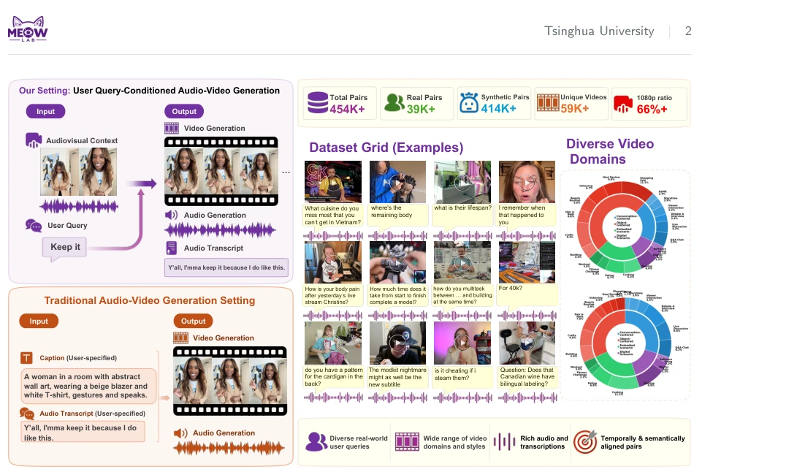
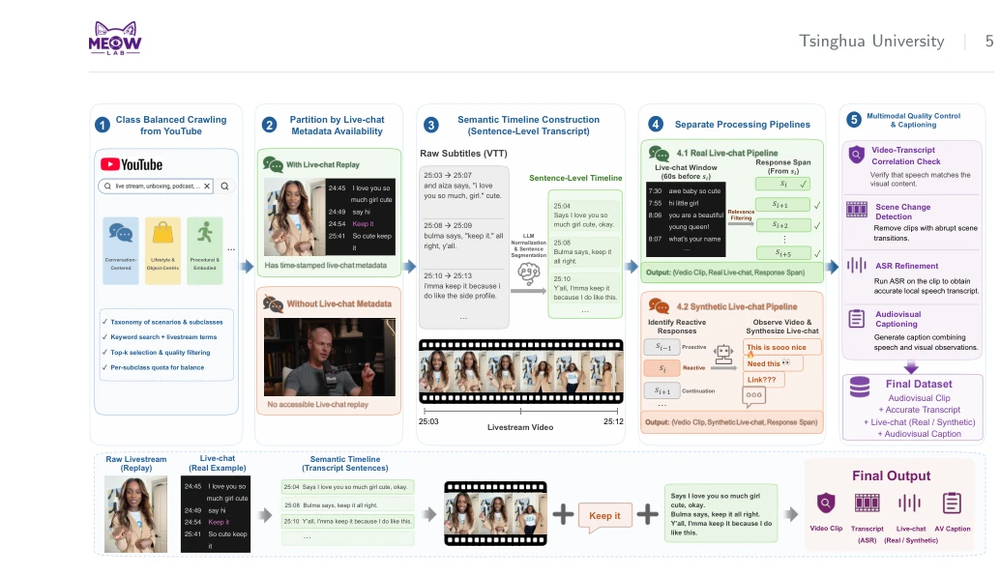
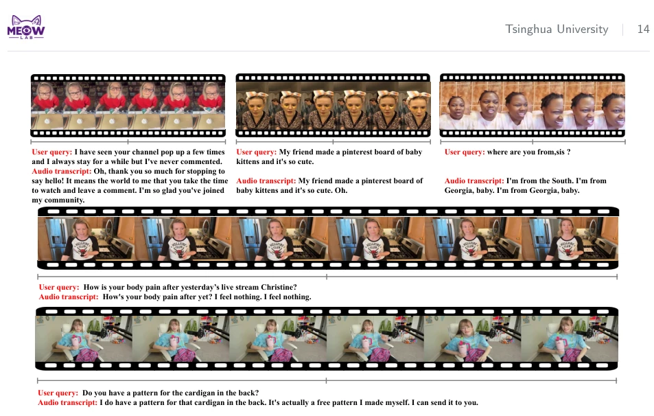
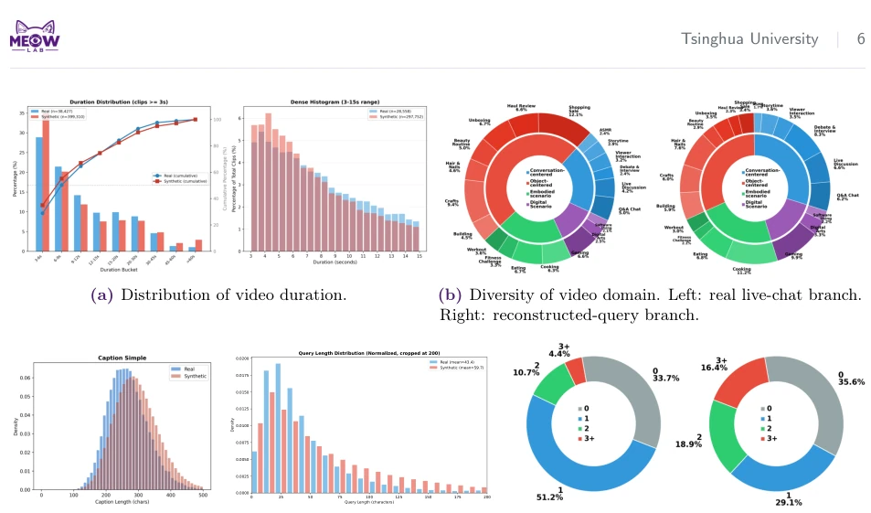
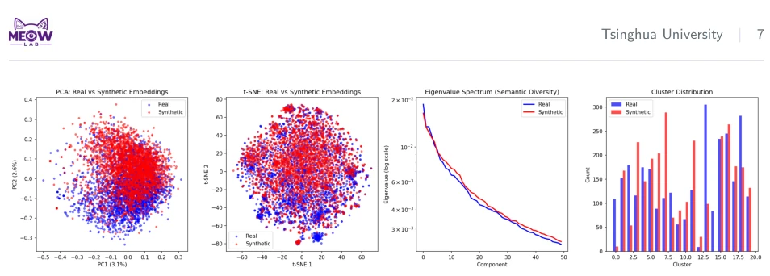
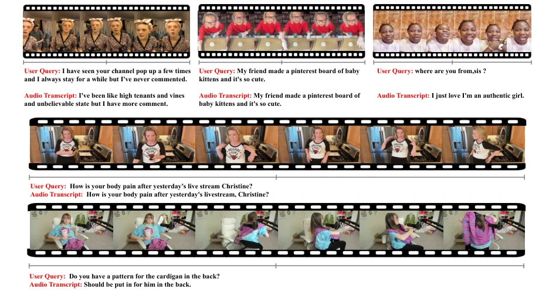
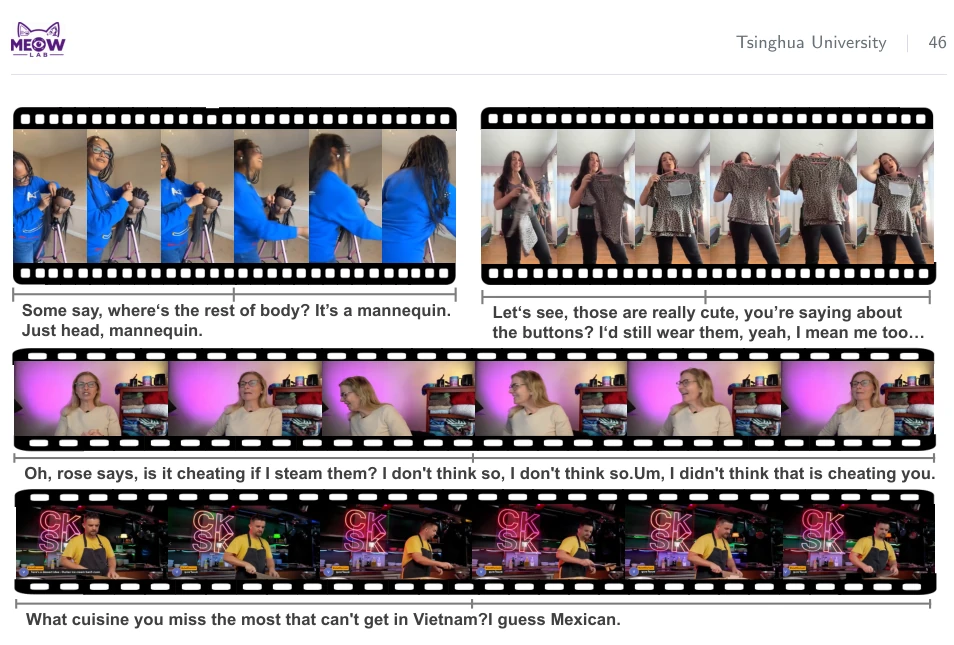
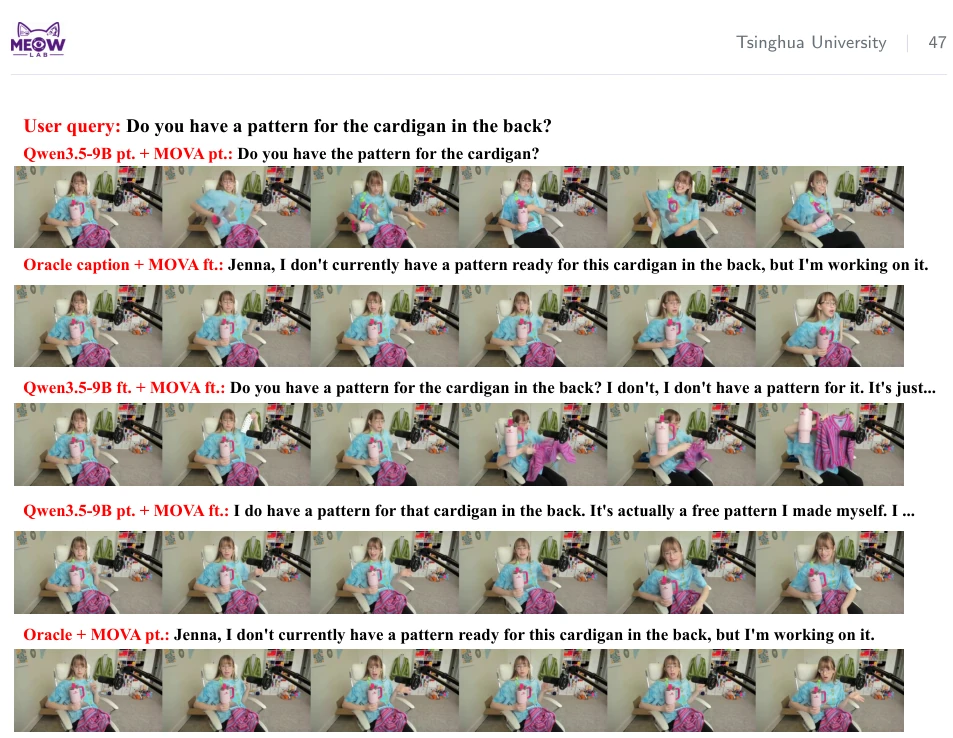
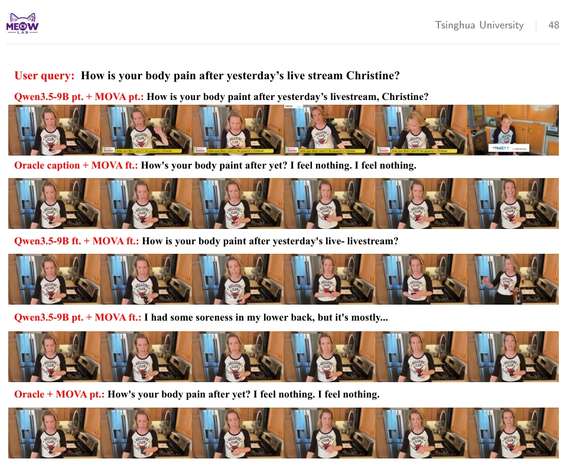

The Tsinghua team has introduced InteracVid, claiming it is the first large-scale interactive audio-visual response dataset. This work is quite meticulous, extracting 450,000 Q&A pairs from live streams, which is significantly better than "mute" models that only describe images. However, admittedly, using live stream slices as training data inevitably introduces noise, especially in the "reconstructed query" branch where VLMs infer what the user asked; does this constitute "speculation"? Although human evaluation shows the reconstruction quality is acceptable, it is essentially synthetic input. However, experiments prove that after fine-tuning, the generator indeed understands "responding to conversational turns" better, though the planner remains a bottleneck. This dataset supplements the "social capabilities" of embodied intelligence, but do not expect it to instantly turn robots into stand-up comedians, after all, there is still a gap between live stream noise and real robot environments.
Large models have made text the mainstream of interaction, but embodied intelligence and virtual humans cannot simply type. Existing audio-visual generation models [22, 23, 48] mostly "describe" scenes rather than react to "stimuli". For instance, if a user asks "Does this wine have bilingual labels?", the model should know how to answer, rather than generating an irrelevant video. Existing datasets [5, 11, 19, 37, 56] either focus only on video understanding or lack contextual background, causing models to fail to learn causality-driven interaction. Live streaming scenarios naturally contain user danmu and host reactions, serving as a goldmine for acquiring such "stimulus-response" data, but direct crawling introduces too much noise and requires specialized cleaning.

Figure 1. Overview of InteracVid. We target an important yet underexplored problem of interactive audio-video generation, providing a large-scale, high-quality dataset with diverse video domains. Each sample keeps the full interaction structure: a preceding audio-visual context, an external live-chat query, and the real audio-visual response that follows.
The overall process involves three steps. First, crawl live stream replays from YouTube based on taxonomy (conversation-centered, object-centric, etc.) to ensure domain balance. The core innovation lies in metadata-aware construction: those with danmu timestamps follow the "real query" branch, directly aligning comments and host responses; those without danmu follow the "reconstructed query" branch, using VLM to observe video and response to infer possible user questions, but the response itself must be real-recorded. Next, perform quality filtering, using VLM to check audio-visual consistency, remove scene cuts, and use Seed-ASR [7] to redo speech recognition to ensure subtitle accuracy. Finally, generate auxiliary AV Caption. This design cleverly decouples "synthetic query" and "real response", expanding data volume while retaining the physical laws of real interaction.

Figure 2. Overview of the dataset curation pipeline. A multi-stage pipeline is used to obtain diverse-domain videos and extract interactive clips from long, noisy livestreams.
The dataset contains 45.4K clips, covering 59K videos. Experiments adopt two-stage generation: VLM as planner, MOVA [66] as audio-visual generator. On a test set of 100 real queries, fine-tuning the generator significantly improves semantic metrics (OVRL +1.41), while fine-tuning the planner yields gains but smaller. Ablation studies show the planner is the bottleneck, because after the generator adapts to the data domain, planning quality determines the ceiling. Human evaluation (10 judges) is highly consistent with VLM evaluation (Pearson r > 0.94), proving automated evaluation is reliable. Additionally, providing context audio significantly improves speech quality, indicating context is important.

Figure 5. Qualitative results obtained using fine-tuned Qwen3.5-9B as interaction planner and fine-tuned MOVA as audio-visual co-generator.
其他图片Other Figures

Figure 3. Statistical information of our dataset. This figure includes the distribution of video domain, duration, length of caption and query, and count of humans in the main video window.

Figure 4. Semantic statistics of the real and reconstructed live-chat queries. Embeddings are extracted by a SentenceBERT model. From left to right: PCA [38] visualization, t-SNE [50] visualization, eigenvalue spectrum, and cluster distribution.

Figure 6. Single-stage diffusion model output. We train the MOVA model to generate the responding audio-visual interaction directly conditioned on the context and query.

Figure 7. Generation results of the fine-tuned MOVA co-generator given the oracle ground-truth caption as conditioning text. This setting isolates rendering quality from response planning.

Figure 8. Qualitative comparison across pipeline configurations on a held-out interaction.

Figure 9. Qualitative comparison across pipeline configurations on a second held-out interaction.